حجز ملعب خماسي من 9 لـ 10.
وصلت 9 وربع. صاحب الملعب عمل scan للـ QR،
والشاشة قالتله:
متأخر 15 دقيقة
فاضل 45 دقيقة من الحجز.
وبرضه بيخلص
10:00
الوقت بيبدأ لما توصل،
ونهايته مكانها.
اللي اتأخر بيلعب اللي فاضل.
ابعتها لصاحبك اللي "على الطريق"